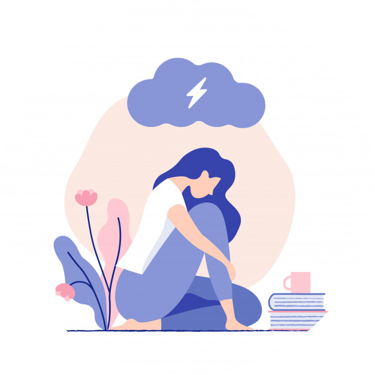

1. Set small daily goalsIt is important to recognize that these aren’t normal times, and your productivity is likely not at its peak right now. That’s okay. Setting daily goals can help you to make your day as productive as possible, but be realistic with the goals you set. Big goals may seem insurmountable right now; instead, focus on small goals for each day that you can cross off your list. Get through the assigned articles for your upcoming class. Finish the first draft of a paper. Make progress on your data cleaning. Setting smaller goals that can feasibly be tackled in a day can help you stay on track. Try to make a short list of manageable tasks to get through every day. |
|
2. Carve out time in your day for work and for relaxationWorking from home can make it much harder to get through your daily tasks when the temptation of Netflix is quite literally right in front of you 24/7. For others, working from home can actually lead to a serious case of overworking now that we are no longer dependent on an office or lab space to restrict work hours. Scheduling when you will work and when you will relax can help you to manage a healthy work-life balance at home. For some, a conventional 9 to 5 schedule with a lunch break in the middle helps them to stay focused. After 5 pm, put down the work, make some dinner, and relax for the rest of the night. For others, their most productive times of the day may be less conventional. |
|
3. Schedule virtual get-togethers with friends.Social distancing can be the hardest aspect of this pandemic for many people. Not getting to spend time with friends can be emotionally taxing. However, social distancing does not mean you have to totally say goodbye to a social life. Schedule virtual get-togethers with your friends, and have them often! The promise of a set time and date to get together can be something to look forward to. Plan Zoom Happy Hours on Friday evenings to celebrate getting through another week, or have a virtual game night on Saturday with the use of different multiplayer apps, like the UNO app. |
|
4. Prioritize your Mental Health.Staying motivated can be near impossible when your mind is filled with anxieties. No work technique is going to keep you motivated when stress is unmanageable, and there is a lot to be stressed about right now. Taking care of yourself can help you to better manage your mental health during this time, so make sure you aren’t letting the basics fall through the cracks. Try to move a bit each day with a walk around your block or an online yoga class. Take time to eat balanced meals, and try not to work through lunch - step away from your laptop and take a lunch break. Don’t stay up until two in the morning. Maintain a normal sleep schedule, and aim to get at least eight hours of sleep a night. Allow yourself time to enjoy TV and social media, but try to reduce how much time you spend listening to pandemic news. |
|
|  |
5. Be okay with not being highly productive right now.Some days you may not have much ability to focus at all, and that’s to be expected! Nobody’s life is normal right now. You may find that you have good days where you’re highly motivated to get through work and bad days where your motivation is nowhere to be found. When work seems impossible, prioritize what you must get done that day — what has a deadline tomorrow, what emails need to be sent before the evening? Get through high priority tasks, and then let yourself have the rest of the day off. And don’t beat yourself up for not getting through your entire to-do list! It’s okay to expect less from yourself right now. |